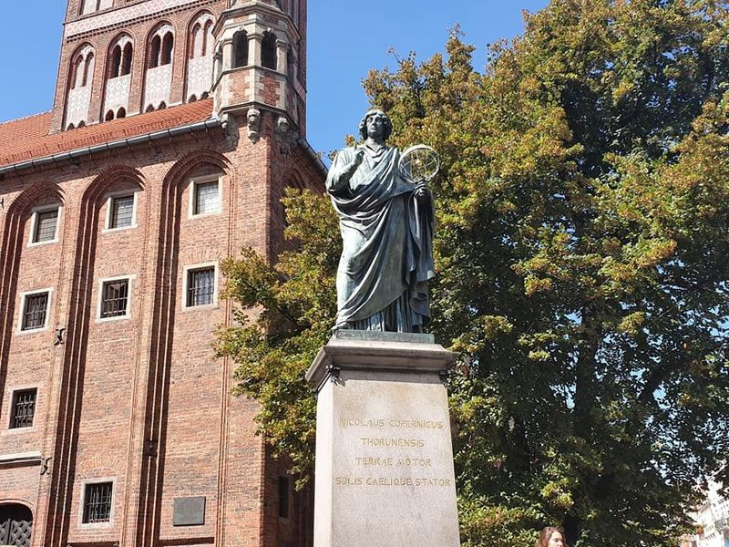
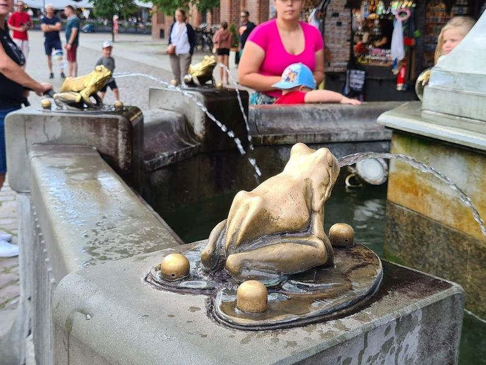
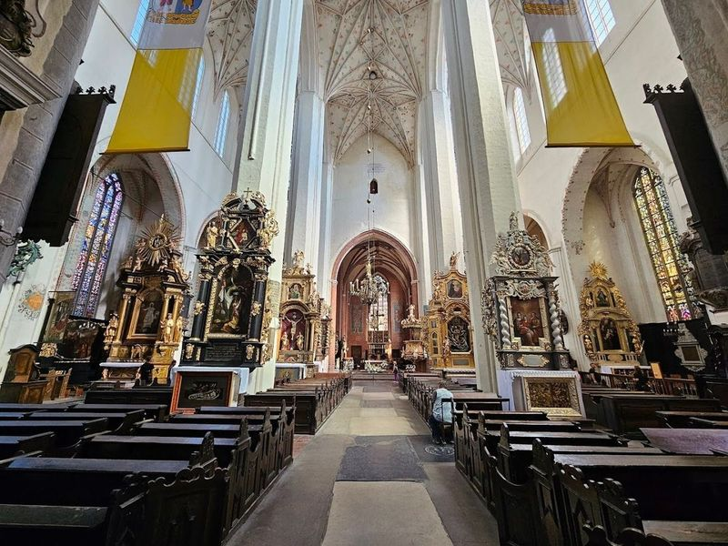
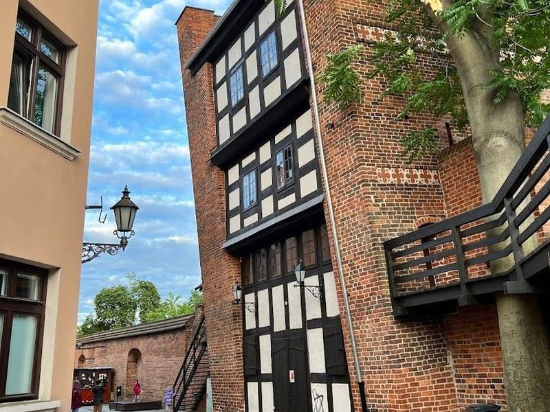
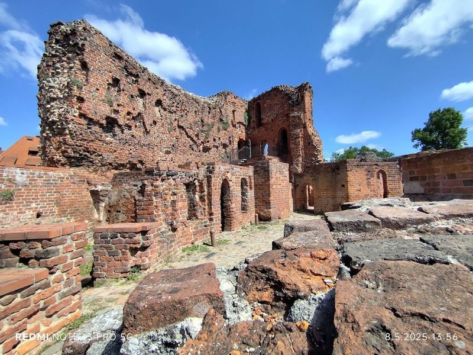
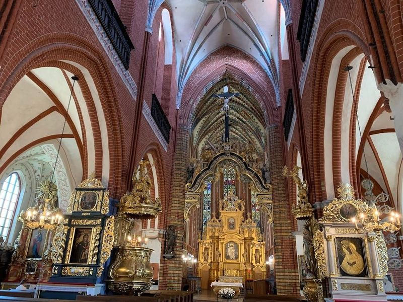
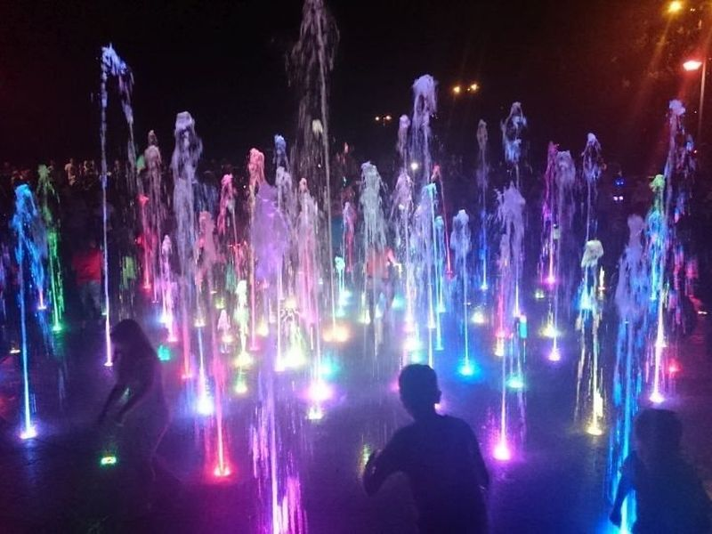
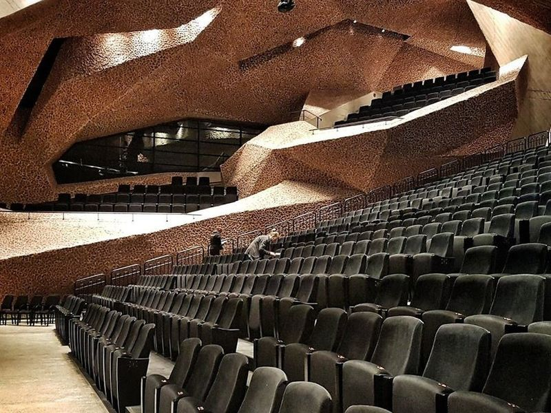
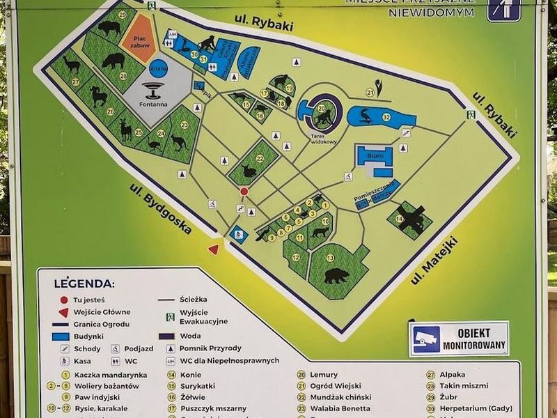
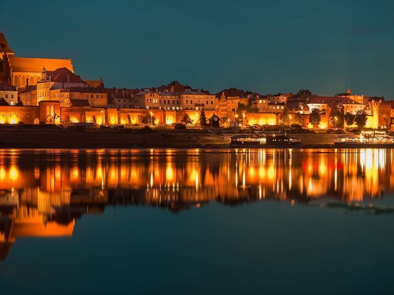

Explore Toruń
A Brief History
Toruń joined the Hanseatic League in the thirteenth century as a Teutonic Order town whose brick granaries and town hall dominated trade on the Vistula between the Baltic and Kraków. Nicolaus Copernicus was born here in 1473, and later Polish rule preserved Gothic churches and city walls largely intact through wars. Gingerbread guilds, university faculties, and riverfront warehouses illustrate how a Prussian-border city kept its medieval plan while anchoring Kuyavian commerce.
Attractions Map
Top Sights & Activities

Nicolaus Copernicus Monument in Toruń
When visiting Toruń, make sure to stop by the Nicolaus Copernicus Monument, a bronze statue erected in 1853 to honor the renowned Renaissance astronomer. Standing at 2.6 meters tall, it is the second oldest monument in Poland and has become a symbol of the city. The statue is a for its historical significance and as a landmark in Toruń's Old City Market Square.

Pomnik Flisaka w Toruniu
Pomnik Flisaka w Toruniu, also known as the Rafter Monument, is a bronze-cast fountain located west of the Town Hall. Built in 1914, it depicts a rafter playing the violin and is surrounded by an intriguing legend. According to local lore, Torun was once plagued by frogs due to a curse cast by a rejected beggar girl.

St. Johns' Cathedral
St. Johns' Cathedral is a brick Gothic church with a rich history dating back to the 14th century. It houses a remarkable 13th-century baptismal font and the Copernicus Chapel, which contains various memorabilia related to Nicolaus Copernicus, including his baptismal font and a marble bust from 1766. The cathedral also offers altars, paintings, and details in excellent condition that make it worth visiting for history enthusiasts.

Krzywa Wieża
Krzywa Wieża w Toruniu, also known as the Leaning Tower of Torun, is a prominent medieval defensive tower located on Pod Krzywa Wieza street in Toru, Poland. Built in the 13th century, this landmark is famous for its significant tilt and is surrounded by legends. According to one legend, it was constructed as penance for a Teutonic Knight's forbidden love affair.

Teutonic Castle ruins
The Teutonic Castle Ruins in Torun, Poland, offer a glimpse into medieval history. The castle was built in the mid-13th century and played a significant role in the conquest of Prussia. Destroyed during an uprising in 1454, it now stands as a testament to the region's tumultuous past. Surrounding the castle are defensive walls and towers that once formed a double-defense system for the Old Town, New City, and the castle itself.

St. Jacob's church
St. Jacob's Church is a Gothic church located in the New City Market Square, towering over the area with its striking gabled tower. Built in the 14th century, it is considered one of Torun's most valuable architectural achievements. The basilica-plan church features a unique construction with lower aisles than the nave and employs a rare free-standing aisle buttress attached to the nave by a flying buttress.

Fontanna Cosmopolis
Fontanna Cosmopolis in Torun is a captivating choreographed dancing fountain that pays homage to the renowned astronomer Nicolaus Copernicus. Each evening, travellers are treated to an enchanting spectacle where streams of water dance in sync with classical and traditional Slavic music. The atmosphere is truly magical as colorful lights illuminate the fountain, creating a mesmerizing display that draws both locals and tourists alike.

Kargul and Pawlak Monument
A humorous monument depicting characters from a popular Polish film, it's a fun photo spot for travellers. The site is catalogued as a monument. The site is catalogued as a monument. The site is catalogued as a monument. Kargul and Pawlak Monument is listed among principal sites for Toruń within Poland.

The Cultural and Congress Centre Jordanki
The Cultural and Congress Centre Jordanki is a modern facility with striking architecture that hosts a variety of performances including theater, dance, and music. Since its opening in 2015, it has welcomed renowned artists like Goran Bregovic, Suzanne Vega, Lisa Stansfield, Sting, and top Polish musicians. Designed by architect Fernando Menis, the center has received prestigious architectural awards.

Torun Zoobotanical Garden
on the outskirts of Torun, the Torun Zoobotanical Garden is a blend of wildlife and greenery that dates back to 1797. This historic garden showcases over 200 animals from around 80 species alongside more than 50 varieties of trees, making it one of Europe's oldest zoobotanical gardens. travellers can explore its diverse offerings, including an aviary, herpetarium, and several serene ponds.

The observation platform - panorama of Torun
The Observation Platform - Panorama of Torun offers an alternative view of the Old Town and is just a short walk from the main train station. It provides a lovely riverside walk, especially at sunset and night, with an view of the city. The platform itself is simple but offers a great spot to enjoy the historical Torun panorama. It's not crowded and can be a peaceful escape from the town's hustle and bustle.